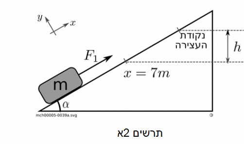
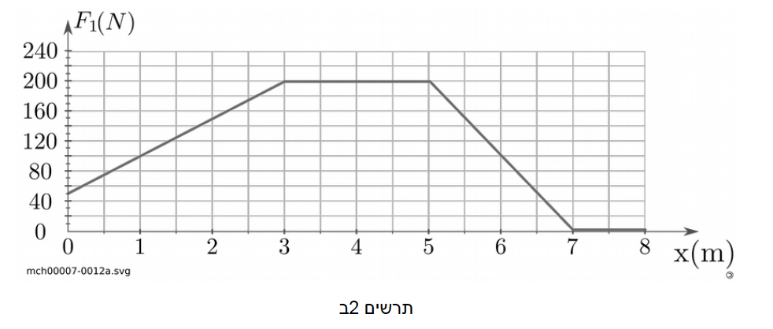
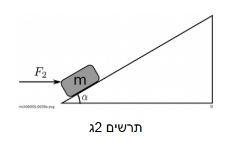

תלמידה מושכת בכוח F1 תיבה שמסתה m=8 kg במעלה מישור משופע חלק שזוויתו עם האופק α=30°. הכוח שמפעילה התלמידה מקביל למישור כמו שמוצג בתרשים 2א'.

הגרף שבתרשים 2ב' מתאר את גודל הכוח F1 כפונקציה של המקום x:

בתרשים 2א' מוגדר ציר x במעלה המישור המשופע וראשיתו בנקודה ממנה מתחיל הגוף לעלות.
א.
העתיקו למחברתכם את תרשים המישור המשופע ועליו הגוף במהלך עלייתו. (12 נק')
i.
סרטטו תרשים הכולל את כל הכוחות הפועלים על הגוף במשך שבעת המטרים הראשונים.
ii.
רשמו בטבלה מי מפעיל כל כוח, מהו כוח התגובה לכוח ומי מפעיל את כוח התגובה.
iii.
חשבו את עבודתו של כל אחד מהכוחות שפועלים על הגוף לאורך 3 המטרים הראשונים.
ב.
חשבו את מהירות הגוף לאחר שלושת המטרים הראשונים. (7 נק')
ג.
באיזו נקודה x, במהלך עלייתה, הייתה מהירות התיבה מירבית (מקסימלית)? נמקו. (5 נק')
ד.
באיזה גובה h מעל הנקודה x=7m (ראו תרשים א') תיעצר התיבה. הניחו שהכוח F1 אינו חוזר לפעול לאחר נקודה זו ושהמישור מספיק ארוך כך שהתיבה אינה נופלת ממנו עד לעצירתה. (5 נק')
ה.
התלמידה חוזרת על הניסוי באמצעות כוח F2 אופקי, ראו תרשים 2ג', שרכיבו המקביל למדרון שווה בגודלו לכוח F1. האם מהירות התיבה במקרה זה, בנקודה x=3m, תהיה גדולה מ-/קטנה מ-/שווה ל-מהירות התיבה באותה נקודה בניסוי המקורי? נמקו, אין צורך בחישוב המהירות. (4.33 נק')
